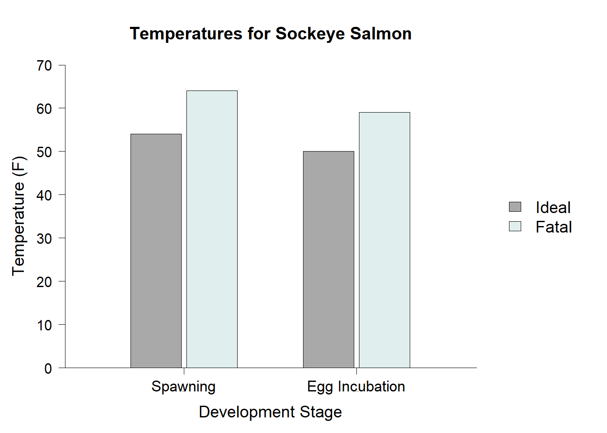
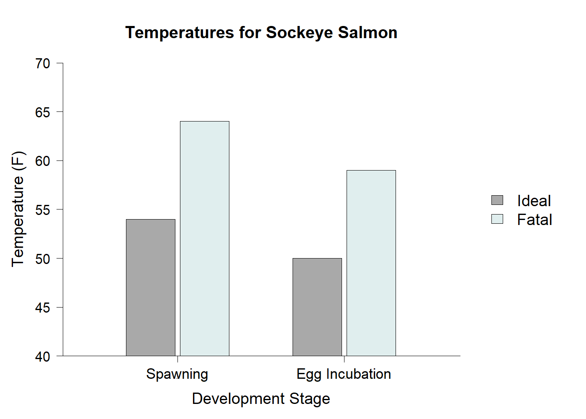

<!DOCTYPE html>
<html>

<head>
    <title>My experiment</title>
    <script src="jsPsych/jspsych.js"></script>
    <script src="jsPsych/plugin-html-button-response.js"></script>
    <script src="jsPsych/plugin-html-keyboard-response.js"></script>
    <script src="jsPsych/plugin-fullscreen.js"></script>
    <script src="jsPsych/plugin-survey-text.js"></script>
    <script src="jsPsych/plugin-survey-html-form.js"></script>
    <script src="jsPsych/plugin-survey-multi-select.js"></script>
    <script src="https://unpkg.com/@jspsych/plugin-image-keyboard-response@1.1.3"></script>
    <script src="https://unpkg.com/@jspsych/plugin-preload@1.1.3"></script>
    <script src="https://unpkg.com/@jspsych-contrib/plugin-pipe"></script>


    <link href="jsPsych/jspsychMAS.css" rel="stylesheet" type="text/css">
</head>

<body></body>
<script>
    async function startExperiment() {
        //Start jsPsych Experiment!!!


        //Initiate jsPsych
        var jsPsych = initJsPsych({
            on_finish: function () {
                // Save data locally as CSV
                jsPsych.data.get().localSave('csv', 'experiment_data.csv');
            }
        });

        const sona_id = jsPsych.data.getURLVariable('id');
        var participant_id = jsPsych.randomization.randomID(10);
        const filename = `${participant_id}.csv`;

        // Add it to every trial's data
        jsPsych.data.addProperties({
            sona_id: sona_id,
            participant_id: participant_id
        });

        /*
        var subject_id = jsPsych.data.getURLVariable('PROLIFIC_PID');
        var study_id = jsPsych.data.getURLVariable('STUDY_ID');
        var session_id = jsPsych.data.getURLVariable('SESSION_ID');
    
        jsPsych.data.addProperties({
            subject_id: subject_id,
            study_id: study_id,
            session_id: session_id
        });
        */

        //Create timeline
        let timeline = [];


        // Set background color to gray //
        document.body.style.backgroundColor = "rgb(128,128,128)"

        // Function to shuffle an array
        function shuffleArray(array) {
            // Fisher-Yates shuffle
            let arr = array.slice(); // copy
            for (let i = arr.length - 1; i > 0; i--) {
                const j = Math.floor(Math.random() * (i + 1));
                [arr[i], arr[j]] = [arr[j], arr[i]];
            }
            return arr;
        }


        // Preload (if you have images, add them here)
        const preload = {
            type: jsPsychPreload,
            images: [
                'images/Salmon_NonTrunc.png',
                'images/Salmon_Trunc.png',
                'images/AvgEmployRate_NonTrunc_L_1.png',
                'images/Vaccines_NonTrunc_L_1.png',
                'images/LifeExpec_NonTrunc_L_1.png',
                'images/PostHighComplete_NonTrunc_L_1.png',
                'images/AnimalThreat_Trunc_L_1.png',
                'images/SpaceVisit_Trunc_L_1.png',
                'images/PlastWaste_Trunc_L_1.png',
                'images/LeadingDeath_Trunc_L_1.png',
                'images/Football_NonTrunc_S_1.png',
                'images/WiFiSpeed_NonTrunc_S_1.png',
                'images/CollegeEnroll_NonTrunc_S_1.png',
                'images/Screentime_NonTrunc_S_1.png',
                'images/InternetUse_Trunc_S_1.png',
                'images/LiteracyRate_Trunc_S_1.png',
                'images/SocialMedia_Trunc_S_1.png',
                'images/FootwareRev_Trunc_S_1.png',
                'images/AvgEmployRate_Trunc_L_2.png',
                'images/Vaccines_Trunc_L_2.png',
                'images/LifeExpec_Trunc_L_2.png',
                'images/PostHighComplete_Trunc_L_2.png',
                'images/AnimalThreat_NonTrunc_L_2.png',
                'images/SpaceVisit_NonTrunc_L_2.png',
                'images/PlastWaste_NonTrunc_L_2.png',
                'images/LeadingDeath_NonTrunc_L_2.png',
                'images/Football_Trunc_S_2.png',
                'images/WiFiSpeed_Trunc_S_2.png',
                'images/CollegeEnroll_Trunc_S_2.png',
                'images/Screentime_Trunc_S_2.png',
                'images/InternetUse_NonTrunc_S_2.png',
                'images/LiteracyRate_NonTrunc_S_2.png',
                'images/SocialMedia_NonTrunc_S_2.png',
                'images/FootwareRev_NonTrunc_S_2.png'
            ]
        };
        timeline.push(preload);

    /*
        // graphs and desciptive text appear together
        var image_text_pairs = [
            { texture: "images/map1.png", text: "this chart shows the ideal and fatal temperatures for spawning and egg incubation of sockeye salmon. If river temperatures rise to a certain point, sockeye salmon populations will be negatively afffected" },
            { texture: "images/map2.png", text: "Do you ever feel like a plastic bag, drifting through the wind wanting to start again?" },
        ]
    */

        // condition A pairs (CHANGE BLOCK SIZE TO FIT # OF PAIRS)
        var conditionA_pairs = [
 
        { texture: "images/AvgEmployRate_NonTrunc_L_1.png", text: "This chart shows the average employment rates in Los Angeles and Chicago." },
        { texture: "images/Vaccines_NonTrunc_L_1.png", text: "This chart shows Measles/DTP1 and DTP3  vaccine coverage percentage rates over different years." },
        { texture: "images/LifeExpec_NonTrunc_L_1.png", text: "This chart shows life expectancy in the United States and Germany over different years." },
        { texture: "images/PostHighComplete_NonTrunc_L_1.png", text: "This chart shows the rate of  education completion after high school in Mongolia and Australia." },
        { texture: "images/AnimalThreat_Trunc_L_1.png", text: "This charts shows the number of threatened animal species between Mexico and Brazil as of 2024." },
        { texture: "images/SpaceVisit_Trunc_L_1.png", text: "This chart shows the cumulative number of people in the U.S. and Russia who have traveled to space in 1979 vs. 1981." },
        { texture: "images/PlastWaste_Trunc_L_1.png", text: "This chart shows the share of plastic waste that is either landfilled or incinerated in 2010 and 2015." },
        { texture: "images/LeadingDeath_Trunc_L_1.png", text: "This chart shows the rates of leading causes of death in the U.S. in 2018 and 2023." },
        { texture: "images/Football_NonTrunc_S_1.png", text: "This chart shows the percentage of total football wins of Wisconsin Badger vs Michigan Wolverines." },
        { texture: "images/WiFiSpeed_NonTrunc_S_1.png", text: "This chart shows the average Wifi download speed in Mbps in UK and US over different years." },
        { texture: "images/CollegeEnroll_NonTrunc_S_1.png", text: "This chart shows total student enrollment at UW-Seattle and the UW-Madison over different years." },
        { texture: "images/Screentime_NonTrunc_S_1.png", text: "This chart shows average screentime use for youtube and tiktok in minutes across different years." },
        { texture: "images/InternetUse_Trunc_S_1.png", text: "This chart shows the global share of internet users of different age groups accessing e-mail services as of 2025." },
        { texture: "images/LiteracyRate_Trunc_S_1.png", text: "This chart shows the global youth literacy rate between 2020 and 2024, by gender." },
        { texture: "images/SocialMedia_Trunc_S_1.png", text: "This chart shows the distribution of social media platform usage in Brazil as of August 2024, by gender." },
        { texture: "images/FootwareRev_Trunc_S_1.png", text: "This chart shows the revenue in the footwear market between the U.S. and China in 2020 and 2025." }
        ];

        // Condition B pairs
        var conditionB_pairs = [
        { texture: "images/AvgEmployRate_Trunc_L_2.png", text: "This chart shows the average employment rates in Los Angeles and Chicago over different years." },
        { texture: "images/Vaccines_Trunc_L_2.png", text: "This chart shows Measles/DTP1 and DTP3  vaccine coverage percentage rates over different years." },
        { texture: "images/LifeExpec_Trunc_L_2.png", text: "This chart shows life expectancy in the United States and Germany over different years." },
        { texture: "images/PostHighComplete_Trunc_L_2.png", text: "This chart shows the rate of  education completion after high school in Mongolia and Australia." },
        { texture: "images/AnimalThreat_NonTrunc_L_2.png", text: "This charts shows the number of threatened animal species between Mexico and Brazil as of 2024." },
        { texture: "images/SpaceVisit_NonTrunc_L_2.png", text: "This chart shows the cumulative number of people in the U.S. and Russia who have traveled to space in 1979 vs. 1981." },
        { texture: "images/PlastWaste_NonTrunc_L_2.png", text: "This chart shows the share of plastic waste that is either landfilled or incinerated in 2010 and 2015." },
        { texture: "images/LeadingDeath_NonTrunc_L_2.png", text: "This chart shows the rates of leading causes of death in the U.S. in 2018 and 2023." },
        { texture: "images/Football_Trunc_S_2.png", text: "This chart shows the percentage of total football wins of Wisconsin Badger vs Michigan Wolverines." },
        { texture: "images/WiFiSpeed_Trunc_S_2.png", text: "This chart shows the average Wifi download speed in Mbps in UK and US over different years." },
        { texture: "images/CollegeEnroll_Trunc_S_2.png", text: "This chart shows total student enrollment at UW-Seattle and the UW-Madison over different years." },
        { texture: "images/AvgEmployRate_Trunc_L_2.png", text: "This chart shows average screentime use for youtube and tiktok in minutes across different years." },
        { texture: "images/InternetUse_NonTrunc_S_2.png", text: "This chart shows the global share of internet users of different age groups accessing e-mail services as of 2025." },
        { texture: "images/LiteracyRate_NonTrunc_S_2.png", text: "This chart shows the global youth literacy rate between 2020 and 2024, by gender." },
        { texture: "images/SocialMedia_NonTrunc_S_2.png", text: "This chart shows the distribution of social media platform usage in Brazil as of August 2024, by gender." },
        { texture: "images/FootwareRev_NonTrunc_S_2.png", text: "This chart shows the revenue in the footwear market between the U.S. and China in 2020 and 2025." }
        ];

        //MAKE SURE TO ADD IMAGES TO PRELOAD!!!!!!

        
        //randomly assigns participants to one of the conditions (A or B)
        var assigned_condition = jsPsych.randomization.sampleWithoutReplacement(
        ["A", "B"], 
        1
        )[0];

        console.log("Assigned condition:", assigned_condition);

        //selects the pairs based on the condtion ppl are assigned to
        var selected_pairs = assigned_condition === "A" 
        ? conditionA_pairs 
        : conditionB_pairs;


        //Shuffles the pairs so the order each participant sees them is different, but they will still see every pair
        var shuffled_pairs = jsPsych.randomization.shuffle(selected_pairs);

        console.log("Shuffled pairs:", shuffled_pairs);

        //convert to timeline variables
        var timeline_variables = shuffled_pairs.map(pair => ({
        texture: pair.texture,
        text: pair.text
        }));

        // Shuffle the pairs so the order each participant sees them is different, but they will all see every pair
       // var shuffled_pairs = shuffleArray(image_text_pairs);

       // console.log("Shuffled pairs:", shuffled_pairs);

        // timeline_variables keeps image and text together
        var timeline_variables = shuffled_pairs.map(pair => {
        return { texture: pair.texture, text: pair.text };
        });


     /*   var shuffled_images = shuffleArray(image_paths);
        console.log("Shuffled images:", shuffled_images);

        // Each element is an object with a "stimulus" property (image path)
        var timeline_variables = shuffled_images.map(img => {
            return { texture: img };
        });
    */


        // make 1 block -> can change to multiple blocks if needed

        // CHANGE BLOCK SIZE TO FIT # OF PAIRS!!!!!!!!!
        const block_sizes = [8,8];
        let blocks = [];
        let index = 0;

        for (let size of block_sizes) {
            blocks.push(timeline_variables.slice(index, index + size));
            index += size;
        }

        // adds a break between blocks so participants know how far along they are
        function breakScreen(blockNum) {
            return {
                type: jsPsychHtmlButtonResponse,
                stimulus: `
            <div style="text-align:center;">
                <p>You are halfway through the experiment.</p>
                <p>Press Continue when you are ready for the next block.</p>
            </div>
        `,
                choices: ['Continue']
            };
        }
            //You have completed block ${blockNum} of 2.

        //var participant_id = jsPsych.data.getURLVariable('participant_id') || Math.floor(Math.random() * 10000);
        //const filename = `participant_${participant_id}.csv`;

        // Initial welcome screen
        var initial_screen = {
            type: jsPsychHtmlButtonResponse,
            stimulus: 'Welcome to our experiment!' +
                '<p> This experiment involves two parts: demographic information, followed by the experimental task.' +
                '<p>At the bottom of this screen, you will see a button that says "Begin Experiment".' +
                '<br>Please only click that button when you are ready to complete the 30 minute experiment in one sitting.</p>' +
                '<p> Once you click that button, it will not be possible to restart the experiment.',
            choices: ['Begin Experiment']
        }
        timeline.push(initial_screen);

        timeline.push({
            type: jsPsychFullscreen,
            fullscreen_mode: true,
        })

        //Consent signing
     /*   var consentSign = {
            type: jsPsychSurveyMultiSelect,
            questions: [
                {
                    prompt:
                        "  <strong>UNIVERSITY OF WISCONSIN-MADISON</strong>" +
                        "  <br><strong>Research Participant Information and Consent Form</strong>" +
                        " <br><br><strong>Title of the Study:</strong> Investigating how observers perceive, interpret, and evaluate visual features in 2D scenes and 3D environments" +
                        " <br><br><strong>Principal Investigator:</strong> Karen B. Schloss (phone: 608-316-4495) (email: kschloss@wisc.edu)" +
                        "  <br><br><strong><u>DESCRIPTION OF THE RESEARCH</u></strong>" +
                        "  <br>You are invited to participate in a research study about how visual features influence the ability to perceive, interpret, navigate, and remember information in visual displays" +
                        "  <br><br>You have been asked to participate because you saw a description of the study and signed up to be a participant." +
                        "  <br><br>The purpose of the research is to understand principles by which people perceive, evaluate and interpret visual information (e.g., the meaning of parts of a scientific diagram)." +
                        "  <br><br>This study will include adults from UW-Madison and nearby areas who volunteer to participate." +
                        "  <br><br>The research will be conducted online, with no requirement to appear in person." +
                        "  <br><br><strong><u>WHAT WILL MY PARTICIPATION INVOLVE?</u></strong>" +
                        "  <br>If you decide to participate in this research you will be presented with visual displays containing images and/or text and will be asked to make judgments about them. For example, you may see shapes and be asked how round they appear or view a graph with a legend and interpret information about the data in the graph." +
                        "  <br><br>You will be asked to respond by making button presses on a keyboard/mouse. You may be asked to complete questionnaires about your expertise or educational level in a given domain (e.g., neuroscience) and questionnaires about what sorts of things you like/dislike. Finally, you may be asked to respond to questions about your experience during the experiment (e.g., how much you enjoyed the task)." +
                        "  <br><br>You will be asked to complete 2-6 surveys or tasks." +
                        "  <br><br>Your participation will last approximately 30-60 minutes per session (as specified when you signed up to participate) and will require 1 session (30 to 60 min total)." +
                        "  <br><br><strong><u>ARE THERE ANY RISKS TO ME?</u></strong>" +
                        "  <br>We don't anticipate any risks to you from participating in this study." +
                        "  <br><br><strong><u>ARE THERE ANY BENEFITS TO ME?</u></strong>" +
                        "  <br>There are no direct benefits for participating in this study." +
                        "  <br><br><strong><u>WILL I BE COMPENSATED FOR MY PARTICIPATION?</u></strong>" +
                        "  <br>Consistent with PSY 202/210/225 policies, you will receive 1 extra credit point/30 minutes of study participation. At the end of the semester, those extra credit points are converted such that 1 point of extra credit = 0.33% added directly to your grade at the end of term. Consult your class syllabus for additional details regarding the application of extra credit points to your final grade." +
                        "  <br><br><strong><u>HOW WILL MY CONFIDENTIALITY BE PROTECTED?</u></strong>" +
                        "  <br>While there will probably be publications as a result of this study, your name will not be used. Typically, group characteristics will be published, but datasets with individual responses may also be shared. In such cases, the data will not be linked to your name or other identifiable information." +
                        "  <br><br><strong><u>WHOM SHOULD I CONTACT IF I HAVE QUESTIONS?</u></strong>" +
                        "  <br>You may ask any questions about the research at any time. If you have questions about the research you can contact the Principal Investigator Karen B. Schloss at 608-316-4495." +
                        "  <br><br>If you are not satisfied with response of research team, have more questions, or want to talk with someone about your rights as a research participant, you should contact the Education and Social/Behavioral Science IRB Office at 608-263-2320." +
                        "  <br><br>Your participation is completely voluntary. If you decide not to participate or to withdraw from the study you may do so without penalty." +
                        "  <br><br>By clicking the box below, you confirm that you have read this consent form, had an opportunity to ask any questions about your participation in this research and voluntarily consent to participate. You may print a copy of this form for your records." +
                        "  <br><br>Please click the box below next to the text 'I consent' to give your informed consent to participate. " +
                        "   </p>",
                    options: ["<strong>I consent</strong>"],
                    horizontal: false,
                    required: true,
                    name: 'Consent'
                },
            ],
            button_label: "Start Experiment",
        };
        timeline.push(consentSign);

        // Demographic questions
        var age_lang_demo = {
            type: jsPsychSurveyText,
            questions: [
                { prompt: "Age", name: 'Age', rows: "1", columns: "3", required: true, },
                { prompt: "Gender", name: 'Gender', rows: "1", columns: "15", required: true, },
                { prompt: "Race/ethnicity", name: 'Race/ethnicity', rows: "1", columns: "30", required: true, },
                { prompt: "List all languages you know", name: "Languages", rows: "6", columns: "60", required: true, }
            ],
            preamble: "Please answer the following questions.",
            button_label: "Done",
            randomize_question_order: false
        }
        timeline.push(age_lang_demo);

        // Consent and demo Completion
        var demo_completion = {
            type: jsPsychHtmlButtonResponse,
            stimulus: "<p>Great job!</p> You have completed the consent process and answered the demographic questions." +
                "<p> Click the button to continue to the experimental task. </p>",
            choices: ['Continue']
        };

    */

        //timeline.push(demo_completion);


        //Instructions for the experiment
        var instructions = {
            type: jsPsychHtmlButtonResponse,
            stimulus: `
                <div style="text-align:left;">
                    <p style="margin-bottom:5px;">In this experiment you will view a series of charts like the one below and read a short explaination of the data shown in the chart. <br>
                        Your task is to provide 1-3 sentences about what you notice about the chart, which you will enter in the text box under each chart.</p><br>
                         <div style="text-align:center;">
                            <p style="font-size:24px; margin:0 0 5px 0;">
                            This chart shows the ideal and fatal temperatures for spawning and egg incubation of sockeye salmon.
                            </p>

                            <div style="display:flex; justify-content:center; gap:20px; margin-bottom:10px;">
                            
                            
                            </div>

                            <label style="display:block; margin:5px 0 2px 0;">What do you notice in the chart?</label>
                            <input name="resp1" type="text" style="width:30%; height:80px; display:block; margin:0 auto 5px auto; padding:4px;">
                        </div>

                    <p style="margin-bottom:5px;">For each chart, please think about what you notice in the chart and write your 1-3 sentence response in the text boxes provided. You will not be able to proceed to the next trial until you type your response in the box.<br>
                        The experiment will take about 30 minutes, and you will be notified when you are halfway through the experiment. <br>
                        Press 'Continue' when you are ready to begin.</p>
                </div>
                `,
            choices: ['Continue']
        };
        timeline.push(instructions);

        // experiment trials
        var list_trial = {
            // formatting the text and text boxes in the trials
            type: jsPsychSurveyHtmlForm,
            preamble: function () {
                return `<div style="text-align:center; padding-bottom:20px;">
                <p style='font-size:24px;'>${jsPsych.timelineVariable('text')}</p>
                
                </div>`;
             },
                html: `
                <label>What do you notice in the chart?</label><br>
                <textarea name="resp1"  
                    style="width:45%; height:80px; margin-bottom:5px;"
                    rows="5"></textarea><br>
                    `,
                     //textarea allows multiple rows for response box - can change width, height, and # of rows if necessary

                button_label: "Next",
            // participants cannot move on to the next trial until they type something in the response box (next button disabled)   
            on_load: function () {
            const reqField = document.querySelector('textarea[name="resp1"]');
            const btn = document.querySelector(".jspsych-btn");
                btn.disabled = true;
                reqField.addEventListener("input", () => {
                btn.disabled = !(reqField.value.trim().length > 0);
                });
             },
             //saves the image and prompt
            on_finish: function (data) {
                data.image = jsPsych.timelineVariable('texture', true);
                data.prompt = jsPsych.timelineVariable('text', true); 
                }
            };


        var iti = {
            type: jsPsychHtmlKeyboardResponse,
            stimulus: '<div style="font-size: 40px;"> </div>',   // blank screen
            choices: "NO_KEYS",  // no responses allowed
            trial_duration: 300
        };


        /*var trial_loop = {
            timeline: [list_trial],
            timeline_variables: timeline_variables,
            randomize_order: false  // images are already shuffled
        };

        timeline.push(trial_loop);*/

        // Add blocks with breaks
        for (let b = 0; b < blocks.length; b++) {

            // Add the trial loop for this block
            timeline.push({
                timeline: [iti, list_trial],
                timeline_variables: blocks[b],
                randomize_order: false
            });

            // Add a break AFTER blocks 1–3 (not after the final block)
            if (b < blocks.length - 1) {
                timeline.push(breakScreen(b + 1));
            }
        }


        //Exit fullscreen
        timeline.push({
            type: jsPsychFullscreen,
            fullscreen_mode: false
        })

        //save the data
    /*    const save_data = {
            type: jsPsychPipe,
            action: "save",
            experiment_id: "MuhCtA1AKP0Q",
            filename: filename,
            wait_message: "Please wait while the next page loads.",
            data_string: () => jsPsych.data.get().csv()
        };
        timeline.push(save_data);
    */
        var debrief_script = {
            type: jsPsychHtmlKeyboardResponse,
            stimulus: '<div style="width:800px">Great job! You have finished the experiment.' +
                '<p>The goal of this experiment is to investigate what factors influence the way people interpret the meanings of charts. In a series of trials, you indicated what you noticed in each of the charts. Some people may have seen different versions of the charts that represented the same data.</p>' +
                '<p>We are interested in understanding how different design factors influence how the data represented in charts is interpreted in different contexts.</p>' +
                '<p>Thank you for participating! Your credit will be updated on Sona within a few days.</p>' +
                '<p>You may press the "esc" key to end the experiment and exit full screen.</p>' +
                '</div>',
            choices: ['NO_KEYS']
        }
        timeline.push(debrief_script);

        console.log("Timeline contents:", timeline);

        //Run the experiment
        jsPsych.run(timeline);
       /* jsPsych.run(timeline).then(() => {
            if (sona_id) {
                window.location.href = `https://uwmadison.sona-systems.com/webstudy_credit.aspx?experiment_id=1652&credit_token=ea076512702d447d87e368a354e37fd9&survey_code=` + sona_id;
            }
                
        });
        */
    }
    startExperiment();

</script>

</html>